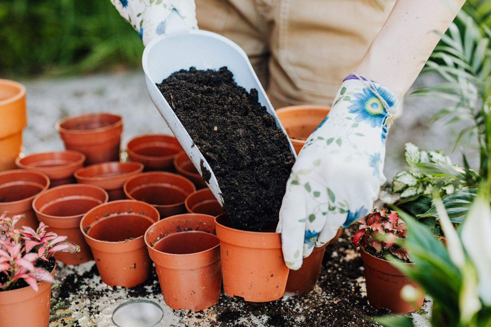
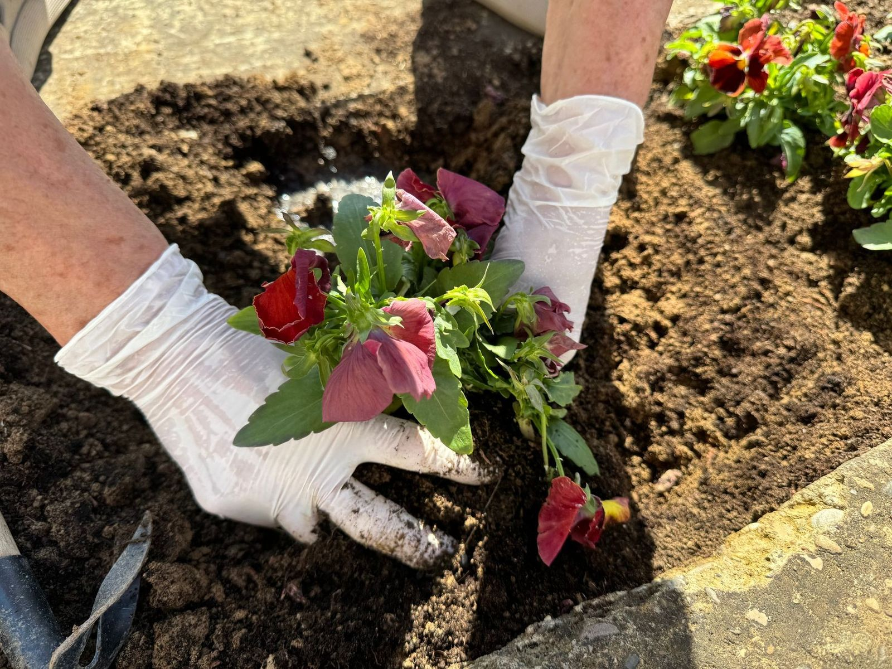

Kiedy wystawić kwiaty na balkon?
Kwiaty balkonowe nie znoszą mrozu. Na stałe wystawiaj je po zimnych ogrodnikach, czyli po 15 maja. Zimni ogrodnicy to 12, 13 i 14 maja, a zaraz po nich przychodzi zimna Zośka. W Polsce przymrozki potrafią wrócić jeszcze w pierwszej połowie maja.
Rośliny kupione w kwietniu trzymaj w jasnym, chłodnym miejscu. W ciepłe dni mogą stać na zewnątrz, na noc zabieraj je pod dach. Takie hartowanie sprawia, że po posadzeniu szybciej ruszają.
Słońce czy cień: co posadzić na balkonie?
Zanim wybierzesz kwiaty, sprawdź, przez ile godzin dziennie słońce świeci na balkon. Od tego zależy, czy rośliny będą kwitły, czy tylko rosły.
| Strona balkonu | Ile słońca | Co posadzić |
|---|---|---|
| Południe | słońce przez większość dnia | pelargonie, Supertunia Vista, Millionbells, aksamitki |
| Wschód lub zachód | słońce przez pół dnia | begonie, pelargonie, petunie |
| Północ | mało słońca | begonie |
Na balkonie północnym petunie i pelargonie wyciągają się i słabo kwitną, dlatego tam lepiej sprawdzają się begonie.
Ile roślin do skrzynki?
- Skrzynka 60 cm: zwykle 3-4 rośliny, np. pelargonie.
- Skrzynka 80-100 cm: 5-6 roślin.
- Kosz wiszący o średnicy 25-30 cm: 3 rośliny.
- Supertunia Vista rośnie bardzo bujnie: do dużej donicy wystarczy jedna lub dwie rośliny.
Zbyt gęsto posadzone kwiaty konkurują o wodę i szybciej słabną. Lepiej zostawić im trochę miejsca, w ciągu kilku tygodni i tak wypełnią skrzynkę.

Ziemia, podlewanie i nawożenie
Do skrzynek używaj świeżej ziemi do kwiatów balkonowych, a na dno daj warstwę keramzytu. Nadmiar wody spłynie, a korzenie nie zgniją.
W upały skrzynki podlewaj codziennie, najlepiej rano albo wieczorem. Po 3-4 tygodniach od posadzenia zacznij dokarmiać rośliny nawozem do kwiatów balkonowych, co 7-10 dni. Najwięcej jedzą petunie, w tym Supertunia Vista, oraz Millionbells.
Przekwitłe kwiaty pelargonii usuwaj na bieżąco. Roślina nie traci wtedy sił na zawiązywanie nasion i szybciej wypuszcza nowe pąki.

Kiedy sadzić byliny, iglaki i krzewy?
Dobre terminy to wiosna (kwiecień-maj) i wczesna jesień (od końca sierpnia do października). Ziemia jest wtedy wilgotna, a rośliny mają czas, żeby się ukorzenić przed upałem albo mrozem.
Rośliny z doniczek możesz sadzić przez cały sezon, byle nie w czasie upałów. Przez pierwsze tygodnie podlewaj je regularnie.
Iglaki podlej obficie jesienią, zanim ziemia zamarznie. Zimą cały czas odparowują wodę, a z zamarzniętej ziemi nie mogą jej pobrać, dlatego wiosną brązowieją.

Pytania i odpowiedzi
Czy pelargonie można przezimować?
Tak. Przed pierwszymi przymrozkami przenieś je do jasnego, chłodnego pomieszczenia (5-10°C), skróć pędy i podlewaj oszczędnie, tylko tyle, żeby ziemia nie wyschła całkiem. Wiosną przesadź je do świeżej ziemi.
Dlaczego petunie przestają kwitnąć w połowie lata?
Najczęściej są głodne. Petunie szybko zużywają składniki z ziemi i potrzebują regularnego nawożenia oraz obfitego podlewania. Pomaga też skrócenie wybujałych pędów o jedną trzecią.
Jakie kwiaty wybrać na balkon północny?
Tam, gdzie słońca jest mało, najlepiej rosną begonie. Pelargonie i petunie w cieniu wyciągają się i słabo kwitną.
Do kiedy kwitną kwiaty balkonowe?
Pelargonie, begonie, petunie i aksamitki kwitną zwykle do pierwszych przymrozków, czyli do października.
Czy aksamitki odstraszają szkodniki?
Aksamitki mają intensywny zapach i ogrodnicy od dawna sadzą je między warzywami. Nawet jeśli nie załatwią sprawy w całości, rabata z nimi długo wygląda kolorowo.